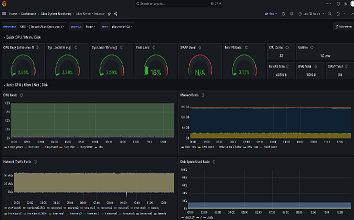
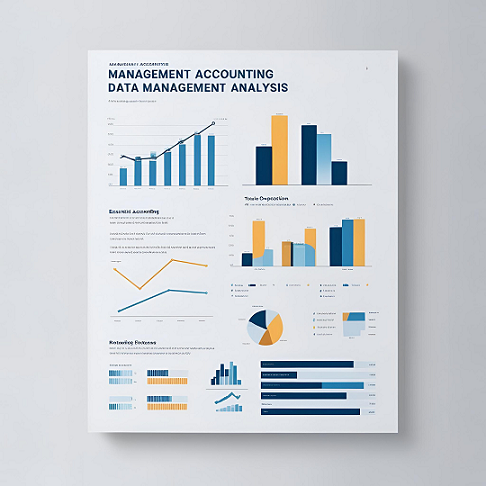
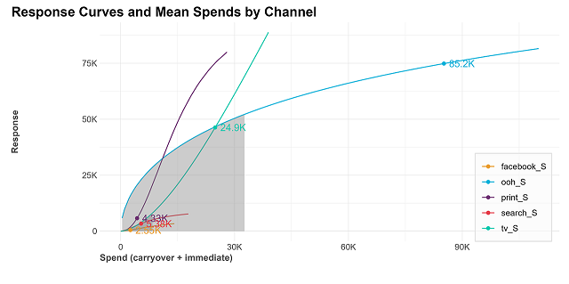

Infrastructure Analytics @NCSOFT
유휴 리소스 감지 시스템 구축
Atlas 적재 메트릭 기반 유휴 리소스 감지 및 리소스 최적화
2025.04 - 2025.07
- - Atlas에 적재된 메트릭을 활용하여 인스턴스의 유휴 상태 자동 탐지
- - Static threshold 기반의 유휴 리소스 판별 로직 설계 및 PromQL로 구현
- - 유휴 리소스에 대한 주간 리포트, 반납 가이드, 예외처리 프로세스 마련
#R
#Python
#PromQL
#Anomaly Detection
#Atlas
#Grafana

Management Analytics @NCSOFT
HQ 비용 상세 분석
관리회계 비용 구조 분석 및 최적화를 통한 투명성 및 효율성 개선
2024.01 - 2024.10
- - 관리회계 비용 구조를 명확히 분석하여 서비스 및 프로젝트별 비용 관리 체계 강화
- - 부서별·서비스별 비용 데이터를 기반으로 예산 책정 및 관리 체계 개선
- - 서비스 공통 업무로 배분된 MM과 간접비 투입 현황을 분석하여 부서 간 협업 및 업무 연관성 강화
#R
#SQL
#plotly
#Quarto

Marketing Analytics @NCSOFT
마케팅 최적화 모델 개발 기획
회사의 데이터와 상황에 최적화된 MMM 모델 개발을 기획
2024.08 - 2024.12
- - 레퍼런스(Robyn, @Meta)를 참고하여 데이터와 비즈니스 상황에 맞는 모델을 기획, 마케팅 성과 예측 및 최적화 체계 마련
- - 핵심 변수와 성과 지표를 정의하고, 모델 개발 방향과 시각화 자료를 제공하여 효율적 개발 지원
#R
#Python
#SQL
#Marketing Mix Modeling
#Robyn
#LightweightMMM
#Time Series

Predictive Analytics @NCSOFT
리니지IP 사용자 수 및 매출 예측
GAM 모델을 활용한 게임 트렌드 예측
2024.07 - 2024.12
- - Generalized Additive Model (GAM) 기반 시계열 모형을 활용한 DAU 및 매출 예측
- - 리니지M 에피소드제로, 리니지2M 신서버에덴, 리니지W 해골 업데이트 효과 분석
- - 고객 유형 분석을 통한 마케팅 지표 생성 및 지표 관리
#R
#Python
#SQL
#GAM
#Time Series
#MLflow

Business Analytics @NCSOFT
리니지2M 고객 표준 모형 개발
데이터 기반 과금 유형 및 주기별 유저 세분화를 통한 고객 분석
2024.06 - 2024.10
- - 리니지2M 유저를 과금 유형별로 세분화하여 고객군의 특성과 결제 패턴을 체계적으로 분석
- - 세분화된 고객 데이터를 활용해 월별 결제액 추이 및 유저 전환 현황을 분석하여 인사이트 도출
#R
#SQL
#ggplot2
#tidyverse

Management Analytics @NCSOFT
관리회계 데이터 기반 분기 리포트 개발
관리회계 및 경영 지표 분석을 통한 의사결정 지원
2022.10 - 2023.12
- - 전사 서비스 및 프로젝트별 비용 집행 현황을 시각화하여 비용 구조 최적화 지원
- - 인사, 관리회계, 게임 등 다양한 내부 데이터를 활용하여 경영 전략 수립을 위한 비용 및 성과 분석 수행
- - Shiny 및 Quarto를 활용한 데이터 리포트 자동화 및 대시보드 구축
#R
#SQL
#ggplot2
#Quarto
#Shiny

Marketing Analytics @NCSOFT
마케팅 비용 한계 효용 분석
마케팅 비용과 매출 간의 관계 분석을 통한 최적 예산 배분 전략 수립
2023.10 - 2023.12
- - 마케팅 비용의 한계 효용을 정량적으로 측정하여 최적 예산 배분 전략 도출
- - 마케팅 비용 증가에 따른 미래 매출 증가 효과 분석
- - 주요 게임 서비스별 월 단위 마케팅 투자 대비 매출 기여도 평가
- - 신규 게임 런칭 시 보완 분석 자료 활용
#R
#SQL
#plotly
#Quarto
#optim
#ROI
#tidyverse
#Nonlinear regression analysis
HR Analytics @NCSOFT
HR 정보 기반 인구통계 현황 리포트
HR 데이터와 프로젝트 투입 정보를 결합한 인력 운영 분석
2023.06 - 2023.09
- - 프로젝트 투입 정보 데이터와 Data Warehouse 인사 정보를 결합하여 인력 운영 현황 분석
- - 직종, 경력, 근속연수 등의 인적 데이터를 활용하여 프로젝트별 인력 투입 패턴 및 특징 도출
- - 직접 투입 MM 데이터의 정확성 검증, 간접 투입 MM을 통해 지원 리소스의 배분 상태 파악
#R
#SQL
#plotly
#Quarto
#tidyverse

People Analytics @NCSOFT
일별 시설별 식수량 과소 예측 보정
예측 모델 개선을 통한 Sold Out 문제 해소 및 발주 최적화
2023.05 - 2023.12
- - 기존 과소 예측 문제를 보완하여 Sold Out 문제 완화
- - 랜덤포레스트(Random Forest) 모델 적용, 과다 예측을 유도하는 편향 조정 기법 활용
- - RMSE 166 → 110, 과소 추정 비율 89.5% → 29.0% 감소
- - 예측 보정된 식수량 데이터가 하반기 위탁 업체 발주량 결정에 활용
#R
#SQL
#plotly
#Quarto
#tidyverse
#Random Forest

HR Analytics @NCSOFT
재택근무 근로 패턴 분석
재택근무 정책 변화에 따른 근무 패턴 및 업무 효율성 분석
2022.04 - 2022.09
- - 근무 유형별 근태 패턴 및 원격 근무 활용도를 분석하여 조직 운영 효율성 제고
- - 조직, 직무, 직책 등에 따른 원격 근무 활용 수준 차이를 정량적으로 분석하여 업무 방식 최적화 지원
- - 정책 시행 전·중·후의 근무 데이터 분석을 통해 재택근무가 업무 생산성에 미치는 영향을 평가
#R
#SQL
#ggplot2
#tidyverse
#Regression

Product Manager @MIDAS IT
HR SaaS 솔루션 기획 및 개발
데이터 기반 HR 성과관리 솔루션 기획 및 대시보드 개발
2021.12 - 2022.04
- - HR 성과관리 SaaS 솔루션 기획 및 데이터 기반 인사이트 제공 기능 설계
- - HR 대시보드 및 개인별 프로필을 설계하여 조직 및 개별 성과 추적 기능 강화
- - 실시간 성과 데이터 시각화를 통해 경영진 및 관리자에게 효과적인 HR 인사이트 제공
#Axure
#Figma

People Analytics @MIDAS IT
AI 역량검사 데이터 기반 예측모형 개발
머신러닝을 활용한 역량 평가 데이터 분석 및 예측 모델 구축
2021.09 - 2021.12
- - AI 역량검사 데이터를 기반으로 예측모델을 개발하여 개인별 역량 평가 자동화
- - 머신러닝 알고리즘을 적용하여 역량 평가의 신뢰도 및 정확도 향상
- - 모델 결과를 분석하여 지원자의 강점과 개발 영역을 정량적으로 평가하는 지표 제공
#R
#Python
#SQL
#H2O.ai
#TensorFlow
#PyTorch

People Analytics @MIDAS IT
조직 네트워크 분석 및 커뮤니케이션 개선
소통 데이터 기반 네트워크 분석을 통한 조직 내 협업 강화 및 인사이트 제공
2021.08 - 2021.10
- - 개인 및 부서별 소통 지표를 도출하여 조직 내 커뮤니케이션 패턴 분석
- - 네트워크 분석 기법을 활용하여 조직 간 협업 구조를 시각화 및 정량화
- - 분석 결과를 HR 시스템에 반영하여 소통 방식 개선 및 조직 운영 최적화
- - 조직 내 팀 정렬도 25% 향상, 부서 간 협업 수준 20% 증가 성과 도출
#R
#SQL
#Network Analysis
#sna
#igraph

HR Analytics @SeAH Holdings
HR 데이터 기반 경영 의사결정 지원
경영진 의사결정을 위한 HR 데이터 분석 및 인사이트 도출
2020.01 - 2021.07
- - HR 데이터 분석을 통해 경영진 대상 인사이트 제공 및 의사결정 지원
- - 조직 내 평가 데이터 및 다면진단 결과를 활용한 분석 모델 구축 및 Insight 도출
- - 데이터 기반 인재 관리 및 후계자 선정 지원을 위한 주요 지표 개발
#R
#SQL
#ggplot2
#tidyverse
#clustering

HR Analytics @SeAH Holdings
데이터 기반 인재 관리 및 조직 최적화
HR 데이터 분석을 활용한 직무 적합성 및 이탈 예측 모델 개발
2020.01 - 2020.04
- - R 기반 직무추천모형 개발을 통해 개인별 직무 적합성 평가 (정확도 90%)
- - 우수인력 선별 및 퇴사 예측 모델 구축을 통한 조직 관리 고도화
- - 분석 모델을 HRIS에 적용하여 실무 활용성 증대
#R
#SQL
#ggplot2
#tidyverse
#Random Forest
HR Analytics @SeAH Holdings
근태 시스템 개선 및 운영
근태 데이터 기반의 법적 리스크 관리 및 주 52시간제 정착을 위한 시스템 도입
2019.08 - 2019.11
- - 근태 및 연차 데이터를 분석하여 법적 리스크를 최소화하고 운영 프로세스 개선
- - 데이터 기반의 근태 모니터링 시스템 도입을 통해 주 52시간제 정착 지원
- - 근태 및 연차 데이터를 기반으로 조직별 근무 형태 분석 및 인사이트 도출
#R
#SQL
#ERP
#HRIS
#ggplot2

HR Analytics @SeAH Holdings
HRIS 기반 데이터 혁신 및 성과 관리 최적화
HR 시스템 활용 극대화를 통한 조직 운영 효율성 증대
2019.05 - 2019.10
- - 성과관리 운영 프로세스를 개선하여 직원 참여율 증가
- - 다면진단 시스템 개선 및 모바일화 추진으로 접근성 향상
- - HRIS 데이터 활용을 극대화하여 조직 관리 효율성 증대
#HRIS